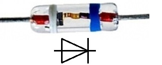
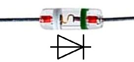
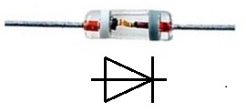
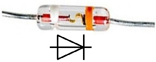
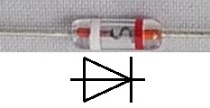
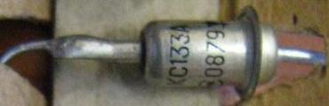
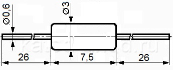

Стабилитроны КС133А, КС139А, КС147А, КС156А, КС168А
(2С133А, 2С139А, 2С147А, 2С156А, 2С168А)
Стабилитроны КС133А, КС139А, КС147А, КС156А, КС168А выпускаются в металлостеклянном и стеклянном (тип корпуса КД-4-1) корпусах с гибкими выводами.
Тип и цоколёвка стабилитрона в металлостеклянном корпус маркированы на корпусе.
Для обозначения типа и полярности стабилитрона в стеклянном корпусах используется условная маркировка цветными кольцами (табл. 1).
Масса:
- около 1 г - металлостеклянный корпус.
- около 0,3 г - стеклянный корпус.
Таблица 1
| Тип стабилитрона |
Маркировка | Внешний вид | |
|---|---|---|---|
| анод | катод | ||
| КС133А | белое кольцо | голубое кольцо |  |
| КС139А | белое кольцо | зеленое кольцо |  |
| КС147А | белое кольцо | серое кольцо |  |
| КС156А | белое кольцо | оранжевое кольцо |  |
| КС168А | белое кольцо | красное кольцо |  |

Рис. 1 - Внешний вид стабилитрона КС133А в металлостеклянном корпусе
 |
 |
| а) | б) |
Рис. 2 - Габаритные размеры стабилитронов КС133А, КС139А, КС147А, КС156А, КС168А:
а) - в стеклянном корпусе, б) - в металлостеклянном корпусе
Таблица 2
| Тип стабилитрона |
Uст | αUст | Uпр (при Iпр) |
rст | Iст | Рmax | Тк max (Тп) |
Токр | ||||
|---|---|---|---|---|---|---|---|---|---|---|---|---|
| мин | ном | макс | мин | ном | макс | |||||||
| В | В | В | %/С | В (мА) | Ом | мА | мА | мА | Вт | °С | °С | |
| КС133А | 2,97 | 3,3 | 3,63 | -0,11 | 1 (50) | 65 | 3 | 10 | 81 | 0,3 | 125 | -60… +125 |
| КС139А | 3,51 | 3,9 | 4,29 | -0,10 | 1 (50) | 60 | 3 | 10 | 70 | 0,3 | 125 | -60… +125 |
| КС147А | 4,23 | 4,7 | 5,17 | -0,09…+0,01 | 1 (50) | 56 | 3 | 10 | 58 | 0,3 | 125 | -60… +125 |
| КС156А | 5,04 | 5,6 | 6,16 | ±0,05 | 1 (50) | 46 | 3 | 10 | 55 | 0,3 | 125 | -60… +125 |
| КС168А | 6,12 | 6,8 | 7,48 | ±0,06 | 1 (50) | 28 | 3 | 10 | 45 | 0,3 | 125 | -60… +125 |
Условные обозначения параметров стабилитронов:
- Uст - напряжение стабилизации стабилитрона;
- αUст - температурный коэффициент напряжения стабилизации стабилитрона;
- Uпр - постоянное прямое напряжение;
- Iпр - постоянный прямой ток;
- rст - дифференциальное сопротивление стабилитрона;
- Iст - ток стабилизации стабилитрона;
- Рmax - рассеиваемая мощность стабилитрона;
- Тк max - максимально-допустимая температура корпуса стабилитрона;
- Тп max - максимально-допустимая температура перехода стабилитрона;
- Токр - температура окружающей среды.